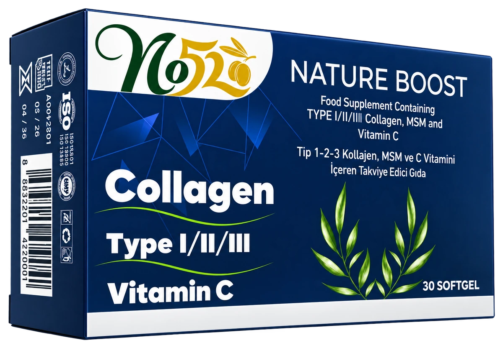

NatureD3K2
D3 ve K2 vitamini içeren takviye edici gıda. 30 softjel, günde 1 adet kullanım, aromasız. Sığır jelatini içerir.
541,14 TL
Sepette 491,14 TL
Trendyol'da aç
No52
Trendyol'daki iki takviye edici gıda ürününün daha çok kişiye ulaşması için 14 günlük içerik planı ve ardından devralınacak düzenli bir süreç.
Üç kanal da çalışıyor. Planın işi, bu kanalların birbirini beslemesini sağlamak.
@no52zeytinyagi hesabında 538 takipçi ve 157 gönderi var. Hesapta marka renkleri ve ürün çekimleri tutarlı.
No52 mağazasında iki takviye edici gıda ürünü yayında. Ürünler Eylül sonunda eklenmiş.
no52.com.tr, Instagram profilindeki tek bağlantı. Müşteriyi mağazaya götüren yol henüz net değil.
İlk aşamada içeriklerin yönlendireceği iki takviye edici gıda ürünü.
D3 ve K2 vitamini içeren takviye edici gıda. 30 softjel, günde 1 adet kullanım, aromasız. Sığır jelatini içerir.

Kolajen, MSM ve C vitamini içeren takviye edici gıda. 30'lu paket, sığır kolajeni. Sığır jelatini içerir.
Fiyatlar 10 Ekim 2026 itibarıyla Trendyol ürün sayfalarından alındı ve değişebilir.
Trendyol'un D3K2 ve kolajen kategori sayfalarındaki ilk sıralara baktık (10 Ekim 2026). Bu bir örneklemdir, tüm pazarın sayımı değildir. Fiyatlar sepet indirimleri dahil görünen fiyatlardır.
| Ürün | Form | Görünen fiyat | Puan (yorum) |
|---|---|---|---|
| Nutraxin D3K2, 120 tablet | Tablet | 354,50 TL | 4,6 (13.757) |
| Erbatab D3 K2 | Damla | 599 TL | 4,7 (20.364) |
| Ocean Orzax D3K2, 20 ml | Damla | 425 TL | 4,7 (5.614) |
| Nutraxin Vitals D3K2 | Sprey | 314,90 TL | 4,6 (4.926) |
| Venatura D3K2, 20 ml | Damla | 270,75 TL | 4,7 (2.905) |
| Kiperin D3K2, 365 damla | Damla | 350 TL | 4,6 (838) |
| No52 NatureD3K2, 30 adet | Softjel | 541,14 TL (sepette 491,14 TL) | Trendyol sayfasından kontrol edilecek |
| Ürün | Form | Görünen fiyat | Puan (yorum) |
|---|---|---|---|
| icollagen, 60 tablet | Tablet | 350 TL | 4,2 (61.408) |
| Kiperin çift hidrolize kolajen (50 günlük) | Diyet takviyesi | 1.499 TL | 4,6 (61.296) |
| Collagen Life 5 Tip, 90 tablet | Tablet | 228,60 TL | 4,3 (36.810) |
| Collagen Forte Platinum, 90 tablet | Tablet | 244,67 TL | 4,3 (8.963) |
| Nutraxin Collagen Beauty Complex, 90 tablet | Tablet | 578,50 TL | 4,5 (4.911) |
| DAY2DAY Collagen Beauty Intense, 30 saşe | Saşe | 1.090 TL | 4,4 (1.168) |
| Erbatab Hidrolize Collagen, 30 saşe | Saşe | 722,30 TL | 4,5 (729) |
| No52 Nature Boost Tip 1-2-3, 30 adet | Softjel | 829,90 TL (sepette 779,90 TL) | Trendyol sayfasından kontrol edilecek |
Kaynak: Trendyol "D3 K2 Vitamin" ve "Tip 1 Tip 2 Tip 3 Kolajen" kategori sayfaları, 10 Ekim 2026. Trendyol'un arama sayfaları otomatik okumaya kapalı olduğu için yalnızca kategori sayfaları incelendi.
Beş içerik türü haftaya dağıtılır. Böylece hesap tek bir konuya sıkışmaz ve her ürün içeriği Trendyol'a bağlanır.
Haftada 1-2 paylaşım. Kutu açılışları, ambalaj çekimleri ve Trendyol yönlendirmesi.
Haftada 1 paylaşım. Etiket okuma, kolajen tipleri ve alerjen bilgisi, yalnızca onaylı ifadelerle.
Haftada 1 paylaşım. Fethiye, tesis, zeytin hasat sezonu ve ekip.
Haftada 1 paylaşım. Sipariş ve kutu açılışı, eğlenceli seri ve yorumlar.
Haftada 1 paylaşım. Anket, soru kutusu ve en çok sorulan sorular.
Süreç zamanla tamamen devralınacak. Bu yüzden her adım kısa ve tekrarlanabilir tutuldu.
Takvimdeki içeriklerin konuları, çekim ve metinleri netleştirilir.
Telefonla dikey çekim yapılır. Yayın öncesi metinler onaydan geçer.
Yorumlara ve mesajlara dönülür, anket sonuçları değerlendirilir.
Erişim, kaydetme, profil ziyareti, bağlantı tıklaması ve Trendyol satışları kaydedilir. Sonraki haftanın takvimi buna göre güncellenir.
Zeytinyağı şişelenip satışa çıktığında aynı düzen o ürünlere de uygulanacak. Öncesinde ürünler, kanallar ve rakipleri kapsayan bir pazar araştırması yapılacak; şimdiye kadar topladığımız ilk bilgiler aşağıda.
Planın başlaması için üç bilgi yeterli: takviye ürünlerin onaylı beyanları, Instagram hesabının yönetim erişimi ve fabrikada çekim izni.